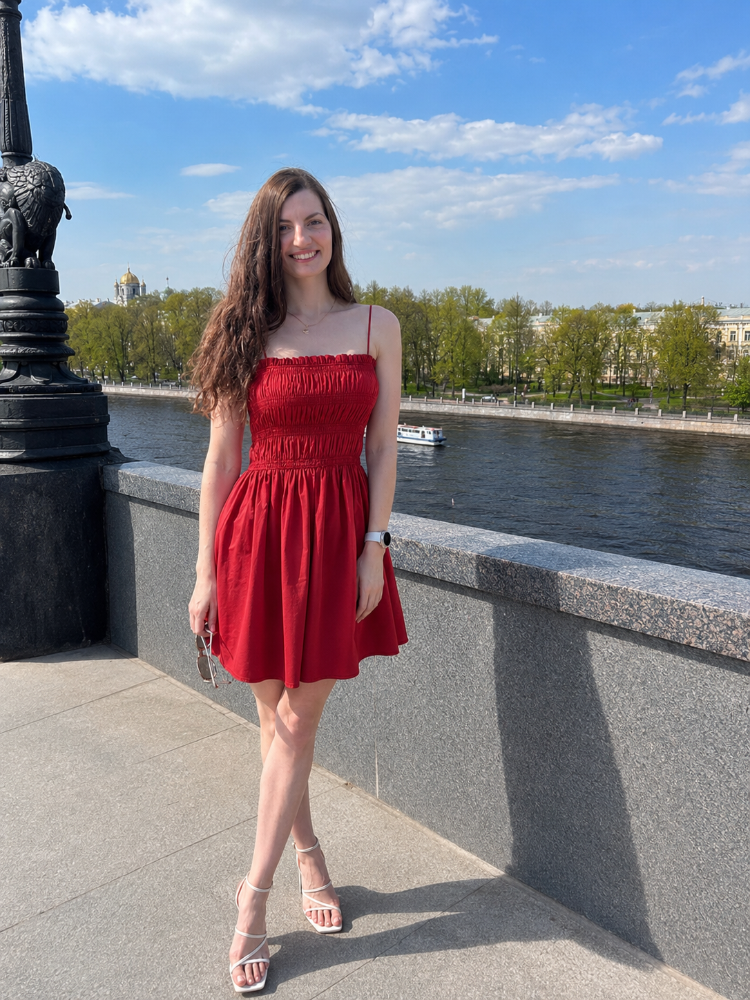

встреча, ясность

сцена

вечер

дорога
Авторская методология · ИИ-платформа
Узнай свою
формулу стиля
и посмотри на себя по-новому
Стилист на основе психологии моды. Не «до и после преображения» — до и после ясности. Не делает из тебя другого человека. Находит формулу, которая делает тебя — заметнее.
Стиль — это не про моду. Это про то, чтобы внешний образ перестал расходиться с тем, кем ты стала.
Узнать свой стиль